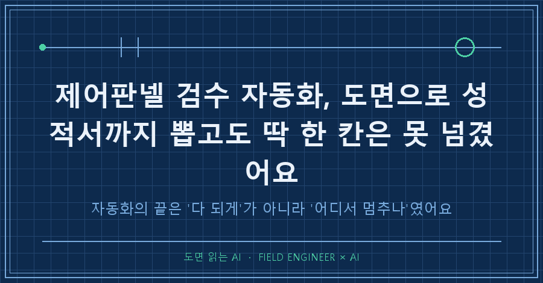
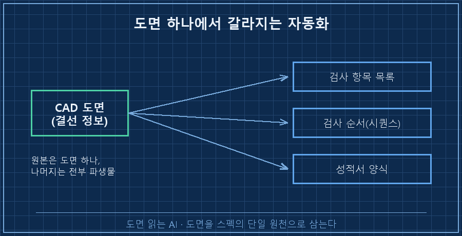
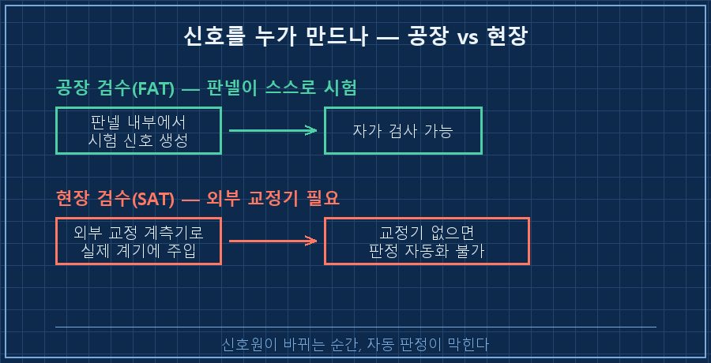
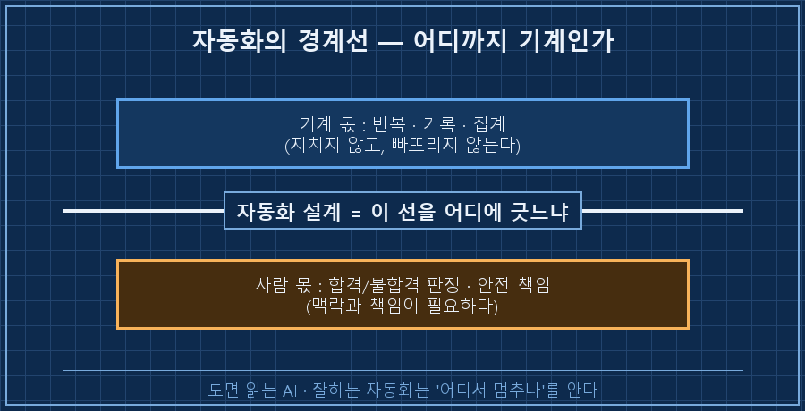

먼저 결론부터 적을게요.
제어판넬 검수 자동화는 도면 한 장에서 검사 순서랑 성적서까지 저절로 뽑아낼 수 있어요.
근데 '합격이냐 불합격이냐'를 찍는 판정, 그 한 칸만은 끝내 기계한테 못 맡겼습니다.
그리고 그게 실패가 아니라, 오히려 이 시스템이 믿을 만해진 이유였어요.
제 본업은 수소 설비 제어예요.
판넬 설계하고, PLC 로직 짜고, 현장 나가서 커미셔닝하는 일이요.
AI는 뉴스로 보는 게 아니라, 그 일을 매일 같이 굴리는 도구로 씁니다.
1. 판넬 검수, 이게 진짜 노가다였어요
제작한 제어판넬은 현장에 나가기 전에 한 번 다 뜯어봐요.
결선도 펼쳐놓고, 단자 하나하나 짚어가면서 선이 제대로 갔는지 확인하고,
신호를 넣어보고, 나오는 값을 읽고, 성적서에 손으로 옮겨 적고.
[예전 검수 방식 — 채널 하나당 반복]
① 결선도에서 해당 채널 위치 찾기
② 실제 단자에 신호 인가
③ 나온 값 눈으로 확인
④ 합격/불합격 손으로 기록
→ 채널 200개 넘게, 하나씩 * 반복 반복 반복..채널이 200개를 넘어가면 이게 온종일 걸려요.
게다가 사람이 하는 일이라, 지치면 한두 칸씩 빠뜨리거나 잘못 옮겨 적기도 하고요.
"이걸 매번 손으로 하는 게 맞나" 싶었던 게 시작이었어요.
2. 도면을 '성적서의 원본'으로 삼았어요
그래서 접근을 바꿨어요.
검사 항목을 사람이 일일이 타이핑하는 게 아니라, 도면에서 기계가 뽑아내게 한 거예요.
CAD 도면 안에는 이미 어느 단자에 무슨 선이 가는지가 다 그려져 있잖아요.
그걸 프로그램이 읽어서 결선 목록을 만들고,
그 목록에서 검사할 채널, 검사하는 순서, 성적서 양식까지 자동으로 만들어지게 엮었어요.
한마디로 도면이 곧 스펙이 되는 구조예요.

이렇게 해두면 좋은 게, 도면이 바뀌면 검사 항목도 성적서도 같이 바뀌어요.
사람이 세 군데를 따로 고칠 필요가 없어지는 거죠.
실제로 아침에 로직 개발을 시작해서, 그날 심야에 실제 판넬에 붙여 표본 채널을 검증하는 데까지 하루 만에 갔어요.
여기까진 계획대로 잘 굴러갔습니다.
3. 가상에선 되던 게, 실물 앞에서 안 됐어요
그런데 자동화라는 게 원래 매끄럽게만 안 가더라고요.
컴퓨터 안에서 만든 '가상 판넬'로 돌릴 땐 전부 통과했어요.
문제는 진짜 쇳덩이 판넬에 물렸을 때였죠.
[가상에선 멀쩡, 실물에서만 터진 것들]
· 읽기와 쓰기를 동시에 시켰더니 → 실물에서만 화면이 먹통
· 멀티미터는 4mA인데 화면엔 7mA로 표시 (신호 눈금이 어긋남)
· 신호 주소가 한 칸씩 밀려서 엉뚱한 채널을 검사특히 첫 번째가 얄미웠어요.
가상 환경에선 반응이 워낙 빨라서 충돌할 틈이 안 생기는데,
실제 장비는 응답이 살짝 느리거든요. 그 미세한 지연 구간에서만 딱 터지는 결함이었어요.
가상에서 통과했다는 건 "될 것 같다"까지지, "된다"가 아니더라고요.
이런 건 로그를 붙잡고 실물 앞에서 하나씩 잡는 수밖에 없었어요.
자동화 코드의 진짜 시험장은 시뮬레이터가 아니라 현장이었던 거죠.
4. 그리고 현장에서 진짜로 막힌 지점
버그야 잡으면 됐는데, 잡아도 안 되는 벽이 하나 있었어요.
바로 판정이었어요.
현장 검수에선 실제 계기에 정확한 신호를 넣어보고, 나온 값이 맞는지를 봐야 해요.
그러려면 '교정된 계측기'가 필요하거든요. 눈금이 보증된 기준 장비요.
근데 같이 일하는 협력업체엔 그 교정 장비가 없었어요.
교정 안 된 장비로 찍은 값은, 합격 도장의 근거가 될 수가 없어요.

결국 절충했어요.
값을 읽고 기록하고 성적서로 남기는 일은 전부 기계가,
"이 값이 합격인가"를 찍는 판정은 사람이.
완전자동이 아니라, 사람이 판정, 기계가 증거 보관으로 내려앉은 거예요.
5. 근데 그게 오히려 정답이었어요
한동안은 이게 반쪽짜리 같아서 아쉬웠어요.
근데 곱씹어보니 정반대였습니다.
자동화는 "전부 다 되게" 만드는 게 아니라,
어디까지가 기계 몫이고 어디부터가 사람 몫인지 선을 긋는 일이더라고요.
| 구분 | 기계에 맡긴 것 | 사람이 쥔 것 |
|---|---|---|
| 검사 항목 만들기 | 도면에서 자동 추출 | — |
| 검사 순서·성적서 | 자동 생성 | — |
| 측정값 기록 | 자동 저장 | — |
| 합격/불합격 판정 | — | 사람이 결정 |
도면을 단일 원본으로 삼으니 뒷단이 줄줄이 자동화됐지만,
물리 계측이랑 안전에 걸린 판정처럼 현실이 막는 지점은 솔직하게 사람에게 남겼어요.
그랬더니 오히려 이 시스템이 더 신뢰받았어요.
"기계가 알아서 합격시켰다"보다 "사람이 판정하고 기계가 증거를 빠짐없이 남겼다"가, 검수라는 일에는 훨씬 안심되는 구조니까요.

자주 묻는 질문
Q. 판정까지 자동화하면 진짜 안 되나요?
기술로는 언젠가 되겠죠. 근데 검수의 판정은 '틀리면 누가 책임지나'가 걸린 자리예요. 교정된 기준이 확보되고 책임 소재가 정리되기 전엔, 판정을 기계에 넘기는 게 오히려 위험해요. 그래서 지금은 기계가 증거를 완벽히 모으고, 도장은 사람이 찍는 선까지가 안전선이라고 봐요.
Q. 도면이 부실하면 이 방식은 무너지지 않나요?
맞아요, 그게 이 구조의 급소예요. 도면이 원본이 되니까 도면이 틀리면 검사도 통째로 틀려요. 그래서 도면에서 뽑은 결선 목록을 실제 판넬이랑 한 번 대조하는 검증 단계를 꼭 앞에 둬요. 원본을 믿되, 원본을 한 번은 의심하는 거죠.
돌아보면 이번에 제가 배운 건 기술보다 태도에 가까웠어요.
자동화를 잘한다는 건 다 되게 만드는 게 아니라, 어디서 멈춰야 하는지를 아는 거였거든요.
지금 반복 작업 하나를 자동화한다고 치면, 여러분은 그 마지막 판단 한 칸을 기계에 넘기실 건가요, 사람이 쥐고 계실 건가요?
이렇게 실무를 AI랑 자동화하다 깨지고 절충한 기록은 makefield.ai에 남겨두고 있어요.